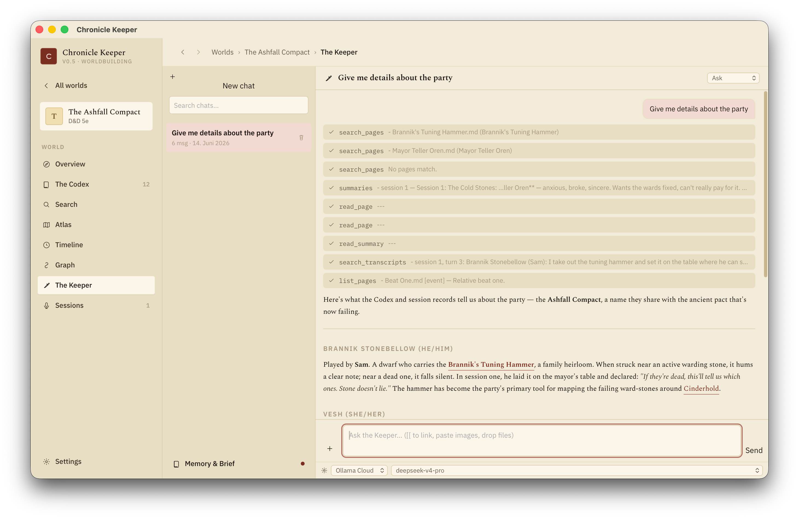

The Keeper
The world's resident AI. It has read your whole wiki — pages, session summaries, transcripts — so it can answer questions, find contradictions, and keep the codex current. It only ever writes when you let it.
Where it lives
Press ⌘J for the Keeper panel, docked beside whatever you're looking at, or open the full Keeper screen for the chat list. Ask it anything about your world — "who rules Ashfall now?", "did we ever name the duke's daughter?", "summarise the party's beef with the Smiths' Guild."
How it answers
The Keeper isn't guessing from a stale snapshot — it actively searches your world to answer. It looks across pages first, then session summaries, then transcripts, reads what's relevant, and replies with [[citations]] you can click. When it proposes changes, you see them as diff cards before anything is written.

You're in control
Each message runs at a permission level you choose:
- Read-only — it can search and read, never write.
- Ask — it proposes edits and waits for your approval on each.
- Accept edits — routine page edits apply automatically; anything structural (renames, deletes) or a shell command still always asks.
Every change is undoable — the Keeper checkpoints before it acts, and its edits show up in page history tagged as its own, so you can review (or revert) exactly what it touched.
What it knows
Before every answer the Keeper assembles its context: your world's identity, your own house rules (an AGENTS.md you can write), a World Brief it maintains about the big picture, and a digest of the page index. Untrusted content — page text, transcripts — always reaches the model clearly fenced as data, so a stray instruction buried in your notes can't hijack it.
Memory & the brief
- Memory — the Keeper keeps small one-fact notes about your world and preferences, so it improves over time. You can view and prune them.
- World Brief — a living overview it writes and refreshes (and flags when it's gone stale), giving every AI feature the same shared sense of your world.
- Attachments — pin specific pages, a session summary, or a transcript range into a chat to focus the conversation, or drop in a text file.
Update the Codex after a session
When you finish a session write-up, the Keeper can read the summary and propose edits to your wiki — new NPCs met, a town's status changed, a thread resolved. Each proposal is grounded against the transcript (with the citation that backs it) and shown as a reviewable diff. Nothing is written until you commit, so your canon only changes on your say-so.
The Keeper runs on whatever LLM you configured — a local Ollama model for fully offline play, or a cloud key for the strongest results. Tool-use works best with capable models; weaker ones fall back to a grounded, citation-only answer mode. See LLM setup.